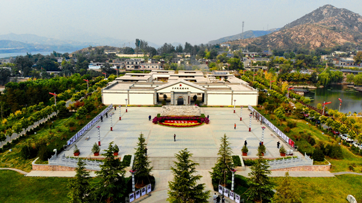
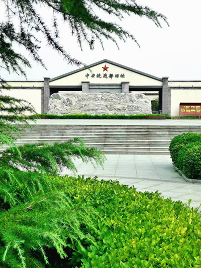

中央统战部旧址

中央统战部旧址
中央统战部旧址所在地李家庄村是中共中央移驻西柏坡期间，中央统战部与各民主党派深入沟通、共商国是所在地。众多民进前辈在此留下了珍贵的足迹，如周建人、雷洁琼、严景耀、葛志成等。旧址占地25亩，建筑面积3200多平方米，包括展览区、办公区、民主人士接待站、中央统战部领导和民主人士旧居区、会议区、防空洞、绿化区、停车场等板块，其中展览区定位为“中国统一战线李家庄展陈馆”,被中央统战部定为“中国统一战线教育基地”。截至2022年3月，展馆累计接待全国各地参观学习团体6000多班次，党日、党建活动700多班次，总客流量210多万人次。